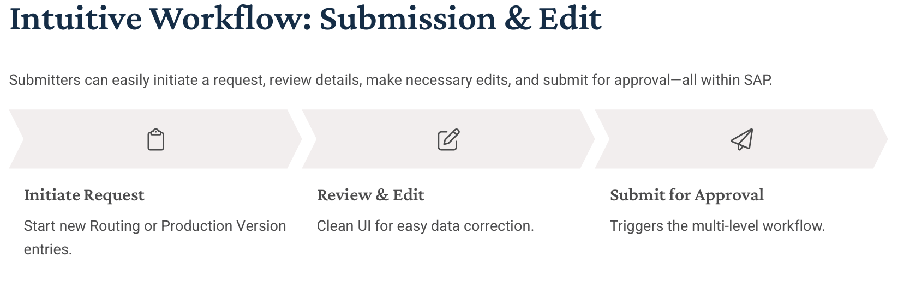
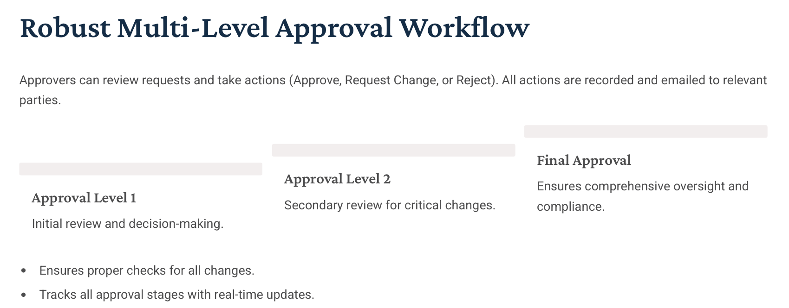

Overview of Our Solution
We developed a comprehensive SAP-based workflow to automate the creation and change of Routing and Production Versions, integrating data uploads, structured approvals, and status tracking—resulting in improved control, speed, and governance.
Client Challenges
- ✔ Manual creation/modification of records was time-consuming
- ✔ Reliance on spreadsheets led to high error rates
- ✔ No structured approval workflows or audit trail
- ✔ Delays in execution and lack of real-time status tracking
SAP ABAP-Based Solution
- ✔ Mass upload via Excel for Routing and Production Version
- ✔ UI-based submission, edit, and validation
- ✔ Multi-level workflow approvals
- ✔ Email alerts and real-time feedback
- ✔ Status lifecycle and audit logs


Key Functionalities
- ✔ Excel upload with auto validation & unique process ID
- ✔ Multi-level approval flow (Approve, Reject, Request Change)
- ✔ Intuitive UI for edit/review in SAP
- ✔ Status visibility from Initiation to Implementation
- ✔ Full audit history for compliance
Business Results
- ✔ 80% reduction in manual effort
- ✔ Real-time transparency into master data changes
- ✔ Full auditability with controlled change management
- ✔ Faster turnaround and improved data accuracy